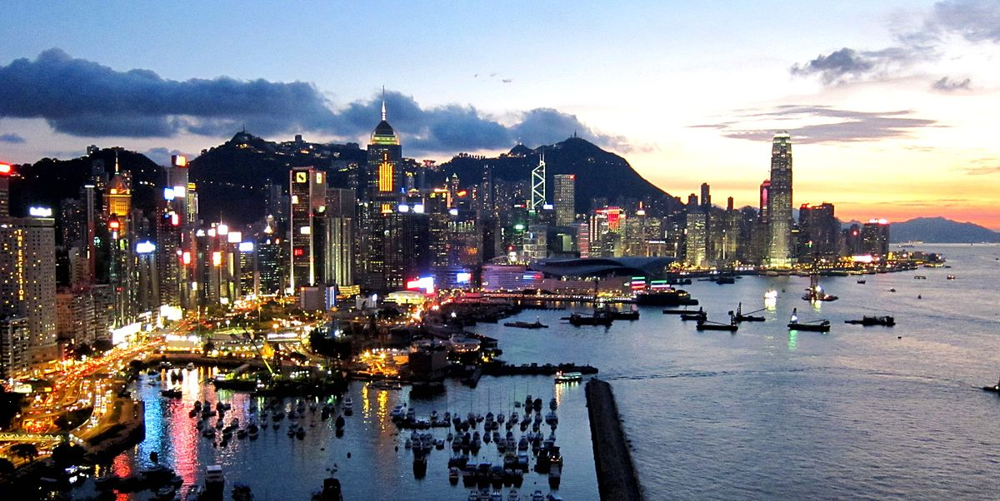
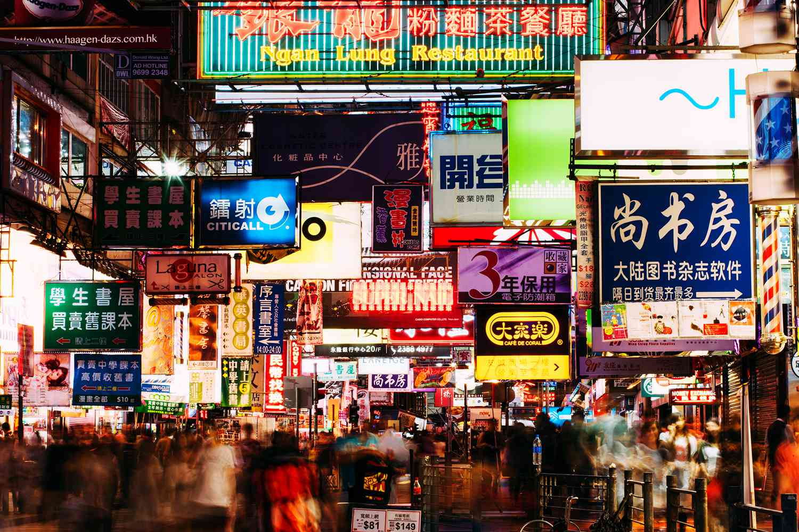

Hong Kong
Hong Kong, officially the Hong Kong Special Administrative Region of the People's Republic of China, is a city and a special administrative region in China. With 7.4 million residents of various nationalities[e] in a 1,104-square-kilometre (426 sq mi) territory, Hong Kong is one of the most densely populated territories in the world.Hong Kong was established as a colony of the British Empire after the Qing dynasty ceded Hong Kong Island in 1841–1842 as a consequence of losing the First Opium War. The colony expanded to the Kowloon Peninsula in 1860 and was further extended when the United Kingdom obtained a 99-year lease of the New Territories in 1898. Hong Kong was occupied by Japan from 1941 to 1945 during World War II. The whole territory was transferred from the United Kingdom to China in 1997. Hong Kong maintains separate governing and economic systems from that of mainland China under the principle of "one country, two systems".

HOW TO GO THERE
If you are looking to book flights from Dubai to Hong Kong International you can make the journey directly. The two airlines providing direct flights from Dubai to Hong Kong International are Emirates and Cathay Pacific, with all flights departing from Dubai International Airport.
WHEN TO GO THERE
The best time to visit Hong Kong is March to April and October to November. Summers are generally hot and humid, while winters are cool and dry. Hong Kong locals brave the city's erratic weather and are known to carry on with their work, no matter what is happening outside.
WHAT TO DO THERE
Feast on local cuisine at a dai pai dong.
Hop on the iconic Star Ferry.
Get your rave on at Clockenflap.
Discover an artsy junkyard at an old leather factory.
Explore Hong Kong's very own salt pan island.
Visit Hong Kong's biggest outdoor carnival.
Sip on a cocktail high above the city.
Website Designed by Bogdan Gotovtsev


 @HAPPY_FEET
@HAPPY_FEET